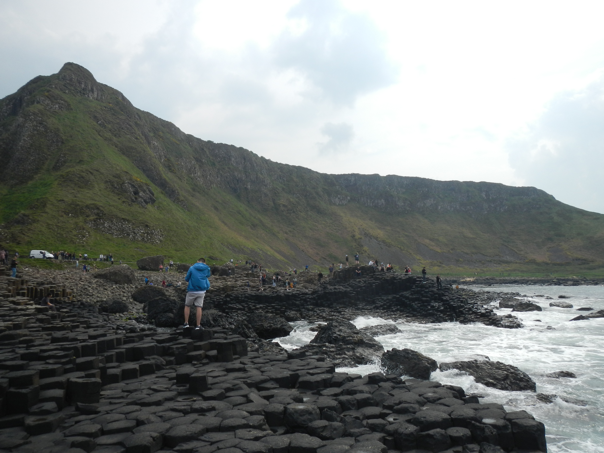

Northern Ireland
Belfast
While we did not have much time to explore the modern day city of Belfast, we were able to go on a political and historical Black Cab tour, looking at murals around part of the city. If you have the chance, I would highly recommend this tour as our driver and guide was extremely informative and engaging. We learned about the history of the separation of the Unionits, those who live in Northern Ireland but see themselves as British, and the Irish republicans, those who are for the freedom of Ireland from British rule. We were able to see the divide by the wall that still separates the two communities although they now live in peace without British soldiers roaming the streets. The gates connecting the two communities open and close every morning. Going from one side to the other, you can see the stark differences in political views. On the Irish Republican side, you can see murals of peace and change activists while on the British Unionist side you can see Monarchy and pro-English murals and propaganda.

Dunluce Castle
After leaving the city of Belfast, we then traveled further north to see Dunluce Castle which is located on the cliffs of Northern Ireland between Giant’s causeway and Portrush. This castle was built between the 15th and 17th centuries which was used to control the land and sea from North Ulster. For a small entrance fee, you can walk through the ruins and see what is left over from this impressive castle and the once bustling town of Dunluce. In the bus tour I took, admission was included.
While the architecture is amazing to take in, the views of the sea and the green fields that surround the area may be even more impressive. I would recommend spending about 30 to 45 minutes exploring here before heading to Giant’s causeway.


Giant's Causeway
Probably my favorite part of my trip up north, Giant’s Causeway is a beautiful natural wonder that you can explore from both below and above. We took a scenic 30-minute cliff hike that offers stunning views of the countryside to the left and the water to the right. After descending about a hundred steps, you can get up close to the unique rock formations.
Legend has it that an Irish giant named Finn McCool created the causeway to cross the Irish Sea and confront his rival, the Scottish giant Benandonner. After their fierce encounter, Benandonner tore up the causeway as he fled back to Scotland, leaving behind the remarkable formations you can see today. You can read more about the history of the site on the National Trust website.